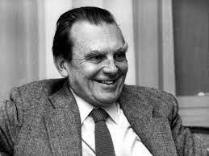

Česlovas Milošas
 Česlovas Milošas (1944-2004) kilęs iš paskutinės Lietuvos Didžiosios Kunigaikštystės bajorų kartos. Būdamas dar mažas vaikas, prieš prasidedant I pasauliniam karui, su mama iškeliavo į Rusiją pas inžinieriumi dirbantį tėvą, ten praleido penkerius metus. 1921–29 mokėsi Vilniaus Žygimanto Augusto gimnazijoje, 1929–34 Vilniaus universitete studijavo teisę, nors ir nuo mažens norėjo būti gamtininku. Nuo 1930 skelbė eilėraščius, pasižyminčius gamtiška vaizduote. Priklausė avangardistų grupei. Č. Milošui teko daug keliauti, emigruoti dėl nepatogių aplinkybių II pasaulinio karo. Jis gyveno Paryžiuje, Lenkijoje, ilgiausiai JAV, kur 1961–78 Kalifornijos universitete Berkelyje, 1981–82 Harvardo universitete buvo slavų literatūros profesorius. Bendravo su lietuvių išeivija, spaudoje ir kitur palaikė Lietuvos laisvėjimo sąjūdį, dažnai lankėsi nepriklausomybę atkūrusioje Lietuvoje.
Kūryba
Jis yra parašęs daug kūrinių. Jo parašyti kūriniai yra apie asmenybės, pasaulio supratimą, sovietų filosofiją, mąstyseną, savo tapatybę. Žymiausi jų yra „Isos slėnis“, apie jo paties vaikystę (pagal jį 1982 metais režisierius Tadeusz Konwicki pastatė filmą), „Tėvynės ieškojimas“, „Pavergtas protas“, kurio rašymui padėjo pirmaisiais gyvenimo metais išmokta rusų kalba. Kiti jo parašyti kūriniai: „Niekad tavęs, mieste“, „Karalius Popielis ir kiti eilėraščiai“, „Užburtasis Gučio“, „Miestas be vardo“, „Kur saulė teka ir kur leidžiasi“, „Regėjimai ties San Francisko įlanka“, „Ulro žemė“, „Mokslų sodas“, „Pradedant nuo manųjų gatvių“ ir vėlesnės leidybos kūriniai: „Neaprėpiama žemė“, „Kronikos“, „Ant upės kranto:, „Tai“, „Kita erdvė: Orfėjas ir Euridikė“, „Pakelės šunytis“, „Milošo abėcėlė“, „Kita abėcėlė“. Už savo kūrybą 1980 metais yra gavęs Nobelio premiją, 1992 metais jam buvo suteiktas Lietuvos garbės piliečio ir Vytauto Didžiojo universiteto garbės daktaro vardai, pripažintas Pasaulio tautų teisuoliu.
,,Niekad tavęs, mieste“
Niekad tavęs, mieste, negalėjau palikti, Ilgos buvo mylios, tačiau stūmė mane atgal it šachmatų figūrą. Bėgau žeme, kuri sukosi vis greičiau, Bet visados atsidurdavau ten: su knygom drobinėj terbelėj, Įbedęs akis į bronzines kalvas už Šv. Jokūbo bokštų, Kur varganas juda arklys ir žmogelis smulkus paskui plūgą, Nebegyvas – ir vienas, ir kitas. Taip, tas tiesa, nesuprato niekas bendruomenės anei miesto, Kinų Lux ir Helios, Halperno ir Segalo iškabų, Vaikštynių Šv. Jurgio gatve, pavadinta Mickevičiaus. Ne, nesuprato niekas. Niekam nebuvo skirta. Tačiau kai gyvenimas minta vien tik viltim, Jog išauš diena aštri ir perregima, Tai labai dažnai skaudžiai gaila. Berklis, 1963
Atminimo įamžinimas
Pagal poeto biografiją režisierius Juozas Javaitis 2011 sukūrė vėliau aukštai įvertintą filmą „Česlovo Milošo amžius“.
Česlovo Milošo vardu buvo pavadinti laiptai Vilniaus senamiestyje, ant kurių išgraviruoti poeto eilių fragmentai lietuvių ir lenkų kalbomis Idėjos autorius skulptorius Jonas Gencevičius, projekto architektas- Tauras Buzdys.
Galerija